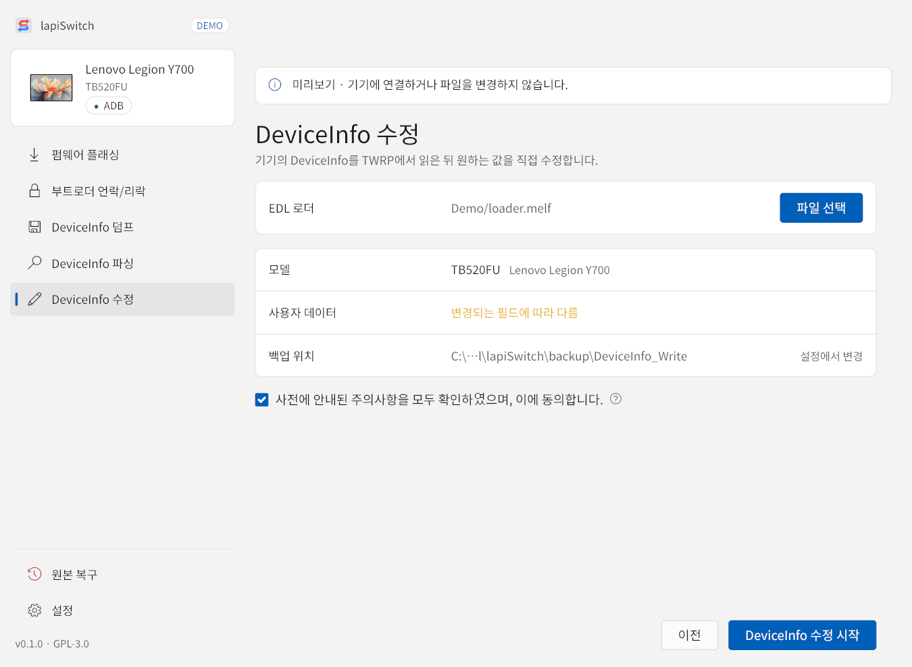
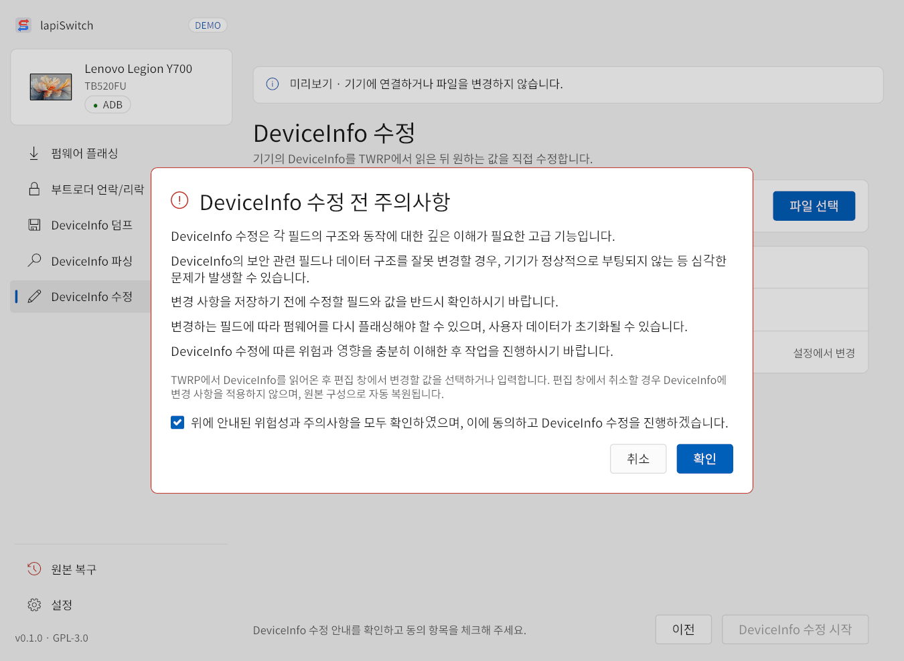
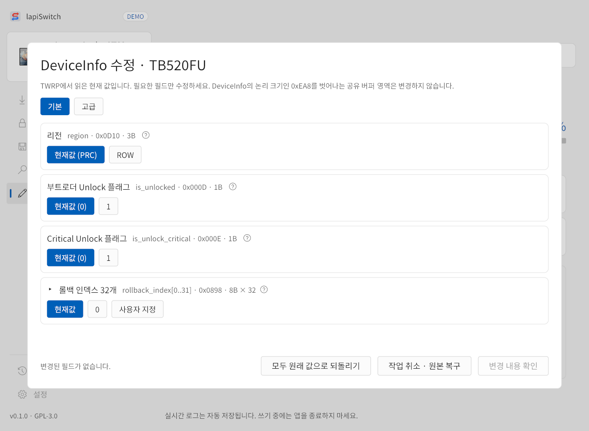
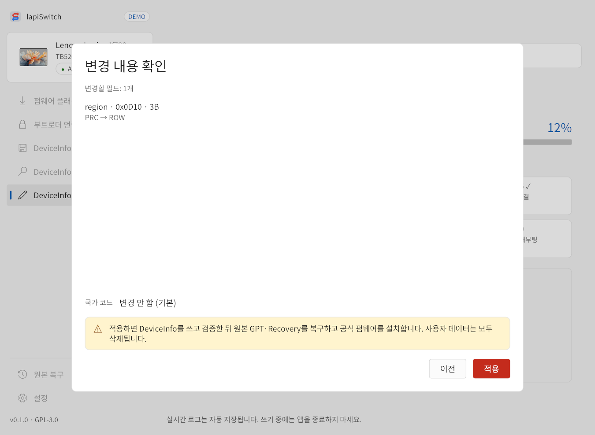

TWRP에서 기기의 DeviceInfo를 읽은 뒤 원하는 필드를 직접 고칩니다. 리전, 부트로더 플래그, 롤백 인덱스뿐 아니라 고급 탭에서 보안·구조 필드까지 바꿀 수 있는 고급 기능입니다.

- 메뉴를 누르면 먼저 주의사항 창이 나옵니다. 내용을 읽고 동의를 체크한 뒤 확인을 누릅니다. 시작 화면의 동의 문구 옆 ?로 다시 볼 수 있습니다.
- 파일 선택으로 EDL 로더를 고릅니다.
- 모델과 백업 위치(
backup\DeviceInfo_Write)를 확인하고 DeviceInfo 수정 시작을 누릅니다. - STEP 06에서 DeviceInfo를 읽으면 편집 창이 열립니다.

1편집 창

- 기본 탭 — 리전, 부트로더 Unlock·Critical Unlock 플래그, 롤백 인덱스 32개(현재값 / 0 / 사용자 지정).
- 고급 탭 — DeviceInfo 구조 맵의 모든 필드를 검색해 고칩니다. 입력은 필드 형식과 크기에 맞아야 합니다.
- 필드 옆 ?로 필드 설명을 볼 수 있습니다.
- 리전을 바꾸면 그 리전의 공식 펌웨어 폴더를 편집 창에서 골라 검사해야 하며, 펌웨어 설치와 데이터 초기화가 함께 진행됩니다. 리전을 바꾸지 않으면 펌웨어를 설치하지 않고 데이터를 유지합니다.
- 모두 원래 값으로 되돌리기 — 바꾼 값을 모두 처음 값으로 되돌립니다.
- 작업 취소 · 원본 복구 — DeviceInfo를 바꾸지 않고 원본 구성을 자동으로 복구합니다.
2변경 내용 확인
변경 내용 확인을 누르면 바뀔 필드와 이전 → 새 값이 표시됩니다. 내용을 확인하고 적용을 누르면 DeviceInfo를 쓰고 4096바이트 전체를 다시 읽어 검증합니다.
